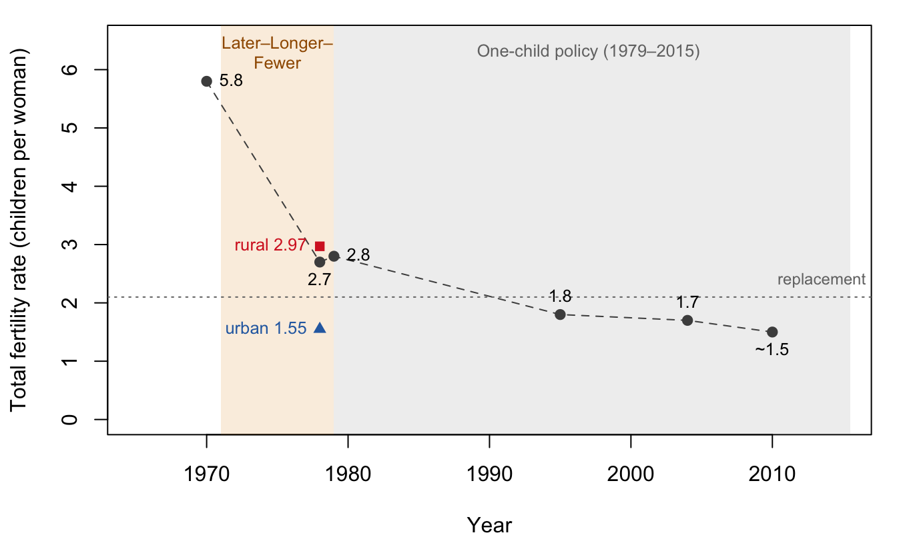

Show the R code
op <- par(mar = c(4, 4.2, 1, 1))
plot(NA, xlim = c(1965, 2015), ylim = c(0, 6.5), xlab = "Year",
ylab = "Total fertility rate (children per woman)")
rect(1971, -1, 1979, 7, col = adjustcolor("#e08a00", 0.15), border = NA)
rect(1979, -1, 2015.5, 7, col = adjustcolor(col_grey, 0.12), border = NA)
text(1975, 6.3, "Later–Longer–\nFewer", cex = 0.8, col = "#a05a00")
text(1997, 6.3, "One-child policy (1979–2015)", cex = 0.8, col = col_grey)
abline(h = 2.1, lty = 3, col = col_grey)
text(2013.5, 2.1, "replacement", pos = 3, cex = 0.75, col = col_grey)
yr <- c(1970, 1978, 1979, 1995, 2004, 2010)
tfr <- c(5.8, 2.7, 2.8, 1.8, 1.7, 1.5)
lines(yr, tfr, lty = 2, col = col_all)
points(yr, tfr, pch = 19, col = col_all)
text(yr, tfr, c("5.8", "2.7", "2.8", "1.8", "1.7", "~1.5"),
pos = c(4, 1, 4, 3, 3, 1), cex = 0.8)
points(c(1978, 1978), c(1.55, 2.97), pch = c(17, 15), col = c(col_urban, col_rural))
text(1978, 1.55, "urban 1.55", pos = 2, cex = 0.8, col = col_urban)
text(1978, 2.97, "rural 2.97", pos = 2, cex = 0.8, col = col_rural)
par(op)